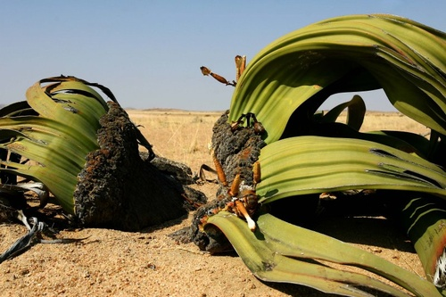
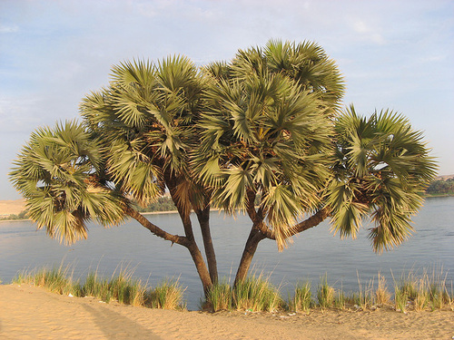

Szahara
A Szahara a Föld legnagyobb sivataga. Az Észak-Afrikában elterülő sivatag területe több mint kilencmillió
négyzetkilométer, kora mintegy 2,5 millió év. A „szahara” név az arab „sivatag” szóval egyezik meg, némileg
eltérő kiejtéssel.
A Szahara Algéria, Csád, Egyiptom, Eritrea, Líbia, Mali, Mauritánia, Marokkó, Niger, Nyugat-Szahara, Szudán és
Tunézia hatalmas területeit foglalja el.
A Szahara legnagyobb része a közfelfogással ellentétben hamada (kő- és sziklasivatag) és nem erg (homoktenger).
A Szahara a helyi mezőgazdasági módszerek miatt kiszáradó szomszédos füves területeket bekebelezve délnek
terjeszkedik, egyes becslések szerint akár évi 48 kilométert is halad Afrika belseje felé
(elsivatagosodás).
A Szahara valamikor a mainál sokkal nedvesebb volt; benne legalább a legutolsó jégkorszak óta élnek emberek. A
Szaharában vízhez kötött állatok (például krokodilok) több mint harmincezer petroglifáját (kőbe vésett képét)
találták meg (több mint felüket a délkelet-algériai Taszilin-Ádzserben). Dinoszauruszok - köztük az
Afrovenator, a Jobaria és az Ouranosaurus - fosszíliái is előkerültek.
A mai Szahara azonban vegetációban szegény, kivéve a Nílus völgyét, az oázisokat és az északi fennsíkokat, ahol
olyan mediterrán növényeket termesztenek, mint az olajfa. A Szaharában ma is több mint 2,5 millió ember él, a
legtöbben Egyiptomban, Mauritániában, Marokkóban és Algériában.
Legfontosabb etnikai csoportjai: az őslakos berberek, mint a tuareg törzsek, olyan elarabosodott berber
csoportok, mint a hasszaníja nyelvű mórok (vagy szahravik, „szaharaiak”), illetve különböző fekete népek, mint
a tubuk, núbiaiak, zagavák, kanurik, fulák, hauszák és szongajok. Fontos szaharai városok: Tamanrasset, Kargla,
Bésar, Haszi Meszaúd, El Ued és Gardaja (Algéria), Timbuktu (Mali), Agadez (Niger), Gat (Líbia) és Faja (Csád).
| 
Afrikai Velvicsia
|

Dum Palma
|
 Szerelemfű
Szerelemfű
|